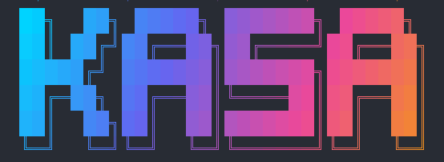

Kasa is a conversational Kubernetes deployment assistant. Talk to your cluster using natural language, with a safety-first approval workflow that protects against mistakes.

Kubernetes Deployment Assistant v0.2.0 ❯ deploy nginx with 3 replicas in production Scanning cluster... ℹ Creating deployment plan: Plan: Deploy nginx to production 1. Create namespace "production" 2. Apply deployment nginx (3 replicas) 3. Apply service nginx (port 80) Type /approve to execute or /abort to cancel ❯ /approve ✓ Plan approved. Executing... ✓ Namespace "production" created ✓ Deployment "nginx" applied (3/3 ready) ✓ Service "nginx" applied ✓ Manifests committed to git
Kubernetes deployments shouldn't require memorizing YAML schemas. Kasa brings the power of AI to cluster management while keeping you in control.
Describe what you want in plain English. Kasa translates your intent into correct Kubernetes manifests and operations.
Every mutating operation requires explicit approval. Review plans before they execute. No surprises in production.
All manifests are stored locally and automatically committed to git. Full audit trail and easy rollback.
Inspects your cluster state, detects drift between manifests and live resources, and checks deployment health.
Works with Gateway API, cert-manager, and any Custom Resource Definition through a dynamic Kubernetes client.
From listing pods to applying resources, checking logs, running dry-runs, and managing Helm releases — everything built in.
Kasa uses Google Gemini AI with an agent framework to understand your requests and interact with your Kubernetes cluster through a rich set of tools.
Type a natural language request like "scale the web deployment to 5 replicas" or "deploy Redis with persistent storage".
The agent inspects your cluster, reads existing manifests, checks resource documentation, and builds a complete picture.
Kasa proposes a plan listing every action it will take. You review it and approve with /approve or reject with /abort.
Approved actions are executed against the cluster. Manifests are saved and committed to git automatically.
go install github.com/perbu/kasa@latestkasa initCreates ~/.kasa/config.yaml with defaults. Add your GOOGLE_API_KEY to the config or set it as an environment variable.
# Interactive mode
kasa
# Single command
kasa -prompt "list all pods in default namespace"For building from source
With a valid kubeconfig
For Gemini AI access